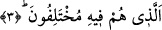

âyetine benzemektedir.
3. (İnanıp inanmamakta) ayrılığa düştükleri.
“Ayrılığa düştükleri” ifâdesi, yukarıda geçen “en-Nebe/haber’” kelimesinin, “el-
Azîm/büyük”ten sonra ikinci bir sıfatıdır. Bu sıfat getirilerek büyük haberin ne kadar
önemli olduğu vurgulanmış ve soruşturulmaya ne derece esas teşkil ettiğine işâret
olunmuştur.
Âyetteki “fîhi” lafzı, “yahtelifûn/ayrılığa düştüler” fiiline bağlıdır. Bu ifâdenin fiilden
önce getirilmesi, ayrılığa düşülen konuya özel bir önem vermek ve âyet sonlarındaki ses
uyumuna riâyet etmek içindir. “Ellezî” kelimesinden sonra onu açıklamak üzere getirilen
cümlenin “isim cümlesi” oluşu, o kâfirlerin ayrılığa düşme bakımından sâbit halde
olduklarını göstermek içindir. Şöyle denmiş olmaktadır: “Onlar içine düştükleri bu
ihtilâfa dalıp gitmişler ve bunda sâbit hale gelmişlerdir.” O kâfirlerden bu haberin; yâni
yeniden dirilmenin imkansız olduğuna kesin kanâat edenler, bir başka âyetin ifâdesiyle;
“Hayat ancak bu dünyada yaşadığımızdır. Ölürüz ve yaşarız bizi ancak zaman helak
eder” (el-Câsiye 45/24), “Biz bir daha diriltilecek de değiliz?” (el-Mü’minun 23/37)
diyorlardı.
Onlardan bâzıları da ilâhlarının kendilerine şefâatçi olacağını iddiâ ediyorlar;
“Bunlar Allah katında bizim şefâatçılarımızdır” (Yûnus 10/18) diyorlardı.
Bâzıları ise, yeniden dirilişten tamamen kuşku duyuyor ve: “Kıyâmetin ne olduğunu
bilmiyoruz. Onun bir tahminden ibaret olduğunu sanıyoruz. (Onun hakkında)
kesin bir bilgi elde etmiş değiliz” (el-Câsiye 45/32) diyorlardı.
Tefsirini yapmakta olduğumuz âyet-i kerîme, kıyâmet-i kübrâya işâret etmektedir.
Kıyâmet-i kübrâ, “fenâ”dan sonra, “bakâ” mertebesidir. Yahut bu, nefsin ölümünden
sonra kalbin dirilmesidir. Ruh ve onun kuvvetleri bunu kabul ederlerken, nefis ve
sıfatları ise bu gerçeği inkâr ederler. Çünkü nefis -bırakalım tadına varmayı- bundan
tamamen câhildir. Nitekim denildiği gibi “tatmayan bilmez.”
Kemâl Hocendî der ki:
Zâhidin senin aşkından uzak durmasına şaşmamalı
Bu şarabın lezzetini, tatmamış olan nereden bilecek?
Yukarda işâret ettiğimiz gerçeği tadanlara ne mutlu! Bundan mahrum kalanlara ise ne
kadar yazık!